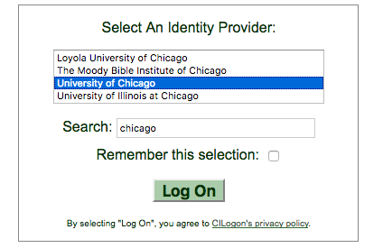

User Certificates¶
Note
This document describes how to get and set up a personal certificate (also called a grid user certificate). For instructions on how to get host certificates, see the Host Certificates document.
Getting a User Certificate¶
This section describes how to get and set up a personal (user) certificate. A user certificate is a type of SSL certificate -- the same technology used for identifying websites when using HTTPS -- but identifying a human instead of a host.
This is used to access some grid resources, such as:
- OSG Topology (for viewing private contact information)
- The
osg-notifytool for sending mass emails - The GGUS ticketing system
- The Koji build system for the OSG Software Stack
User certs may also be useful for debugging storage access (such as XRootD).
Currently, you can get a user certificate from CILogon.
Know your responsibilities¶
If your account or user certificate is compromised, you must notify the issuer of your certificate. In addition, you should update your certificate and revoke the old certificate if any of the information in the certificate (such as name or email address) change. For the CILogon RA send email to ca@cilogon.org. Additional responsibilities required by the CILogon CA are given on their page.
Getting a certificate from CILogon¶
You will have to obtain your user certificate using the CILogon web UI. Follow the steps below to get an user certificate:
- Open the CILogon page, https://cilogon.org, in your browser of choice
-
First, either search for your institution and select it or scroll through list and do the same.
.
Warning
Do not use Google, GitHub, or ORCID as providers since they are not widely supported in the OSG. If your institution is not on the list, please contact your institution's IT support to see if they can support CILogon.
-
Click the
Log Onbutton and enter your institutional credentials if prompted. - After successfully entering your credentials, click on the "Create Password-Protected Certificate" link
- Enter a password that is at least 12 characters long and then click on the
Get New Certificatebutton. - Click the
Download Your Certificatebutton to download your certificate in.p12format. The certificate will be protected using the password you entered in the previous step.
Certificate formats¶
Your user certificate can be stored in a few different formats:
CILogon will give you a certificate in the PKCS12 format (file extension .p12).
The PKCS12 format stores the certificate and private key in a single file along with an optional certificate chain.
This is the file format that can be loaded into your browser for accessing Topology, GGUS, or the Koji web interace with.
Most command line tools use the PEM format (file extension .pem).
The PEM format stores the public certificate in one file, and the private key in another file.
To convert a PKCS12 file to PEM files, do the following:
-
First, extract your user certificate from your PKCS12 file by running the following command. You'll be prompted for the password you used to create the certificate. The invocation assumes that the PKCS12 file is called
usercred.p12. After running, the PEM certificate will be written tousercert.pem.user@host $ openssl pkcs12 -in usercred.p12 -out usercert.pem -nodes -clcerts -nokeys Enter Import Password: MAC verified OK -
Second, extract the private key by running the following command. You'll be prompted for two different passwords. The first prompt will be for the password that you used to create the certificate. The second prompt will be for the password that will encrypt the PEM certificate that will be created. As before, the invocation assumes that your PKCS12 certificate is located in
usercred.p12. After running, the PEM certificate with your private key will be written touserkey.pem.user@host $ openssl pkcs12 -in usercred.p12 -out userkey.pem -nocerts Enter Import Password: MAC verified OK Enter PEM pass phrase: Verifying - Enter PEM pass phrase:
Using Your User Certificate¶
-
The standard location to place user certificates is in the
.globussubdirectory of your home directory:user@host $ mkdir -p ~/.globus user@host $ cp userkey.pem ~/.globus/ user@host $ cp usercert.pem ~/.globus/ user@host $ cp usercred.p12 ~/.globus/ user@host $ chmod go-rwx ~/.globus/userkey.pem ~/.globus/usercred.p12 -
In order to find the Distinguished Name (DN), issuer and lifetime of a certificate:
user@host $ openssl x509 -in ~/.globus/usercert.pem -noout -subject -issuer -enddate -
To generate a proxy use the command
voms-proxy-init.user@host $ voms-proxy-init
Revoking Your User Certificate¶
If the security of your certificate or private key has been compromised, you have a responsibility to revoke the certificate. In addition, if your name or email address changes, you must revoke your certificate and get a new one with the correct information.
If you have a CILogon issued certificate, contact ca@cilogon.org in order revoke your certificate. If you received a certificate from another CA, please contact the CA to initiate a certificate revocation.